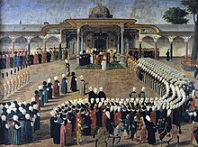
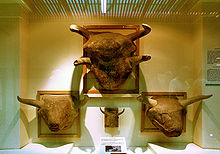

A História da Turquia inicia-se nos tempo pré-históricos mais antigos. A Turquia como país com a configuração atual só surgiu na década de 1920, quando o Império Otomano foi abolido e substituído pela República da Turquia, mas esta pode considerar-se uma legítima sucessora de uma série de impérios que tiveram o seu centro de poder no que é a Turquia contemporânea. Apesar do nome do país e da longa história, a migração dos povos turcos para o território da atual Turquia é um fenómeno relativamente recente, com cerca de mil anos. Os turcos, povos cuja língua pertencem ao ramo das línguas turcomanas, começaram a emigrar das suas terras ancestrais para a Anatólia no século XI.
Os primeiros impérios turcos incluem o Império Göktürk, que existiu entre os séculos VI e VIII, e o Império Seljúcida, que governou a região entre os séculos XI e XIV. Ambos os impérios tiveram um impacto significativo na história da Ásia Central e Ocidental, e ajudaram a difundir a cultura e a religião islâmica na região. O Império Otomano, por sua vez, foi fundado no século XIII na região da Anatólia, na atual Turquia. Ele cresceu rapidamente e, no século XVI, tornou-se um dos maiores impérios da história, abrangendo grande parte da Europa, Ásia e África. Os otomanos governaram por mais de 600 anos e deixaram um legado duradouro na cultura, na política e na religião da região. Durante seu auge, o Império Otomano foi liderado por sultões, que exerciam poder absoluto sobre seus súditos. O império foi um centro de comércio e cultura, e abrigou várias das cidades mais importantes do mundo islâmico, incluindo Istambul (anteriormente conhecida como Constantinopla). O Império Otomano entrou em declínio no século XIX, devido a uma série de fatores, incluindo guerras, crises econômicas e pressão externa de potências europeias. O império foi dissolvido após a Primeira Guerra Mundial, e a República da Turquia foi fundada em seu lugar em 1923.
